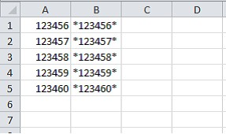
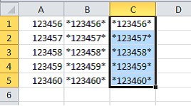
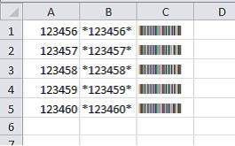

Membuat kode barcode di Excel
Barcode dibuat dengan menginstal font barcode lalu mengubah format teks kode menjadi font tersebut.
Langkah praktik
- Instal font barcode (misalnya Code 39) di komputer.
- Ketik kode di sel, untuk Code 39 awali dan akhiri dengan tanda bintang: *12345*.
- Ubah font sel menjadi font barcode.
- Perbesar ukuran huruf agar mudah dipindai.
Tangkapan layar praktik


